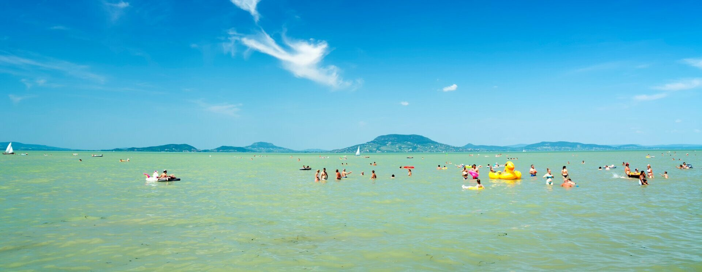
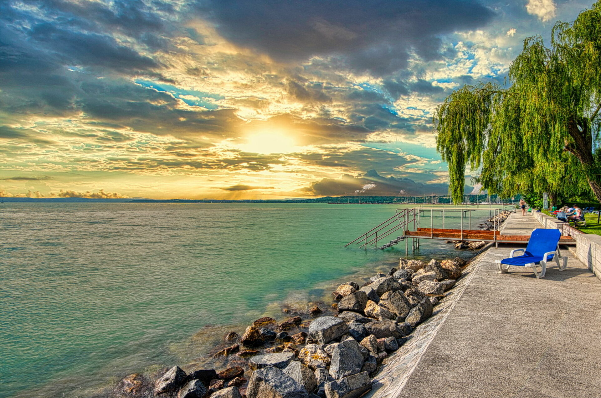
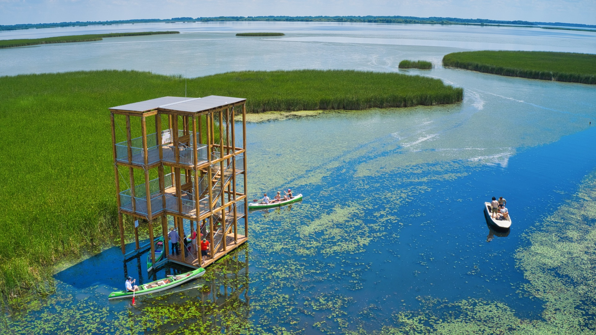
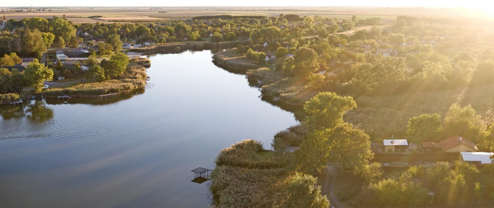

A Balaton Magyarország legnagyobb tava, és az egyik legismertebb nyaralóhely. A tó körüli települések évszázadok óta vonzzák a látogatókat, akik a pihenés mellett aktív kikapcsolódásra is vágyakoznak. A Balaton vize sekély, így a családok számára is ideális választás, hiszen a kisgyerekek is biztonságosan fürödhetnek.

A vízi sportok szerelmesei számára is bőven kínál lehetőségeket, mint például a vitorlázás, szörfözés, és kajakozás. A Balaton partján számos borászat található, így a borkedvelők is élvezhetik a helyi borokat és gasztronómiát. A nyári hónapokban rengeteg rendezvény, fesztivál és koncert várja a látogatókat. A Balaton észak- és déli partja között is eltérő élményeket kínál, mindkét oldalon különleges tájakkal és hangulatos városokkal. A Balaton környékén több nemzeti park is található, ahol a természet szerelmesei gyönyörködhetnek a helyi flórában és faunában. Az aktív turizmus mellett a tó környéki pihenőhelyek és wellness hotelek is népszerűek. A Balaton télen is vonzó úti cél lehet, mivel a téli séták és a havas táj különleges élményt adnak.A Tisza-tó egy mesterségesen kialakított tó, amely a Tisza folyó mentén található, és igazi paradicsoma a vízi sportok szerelmeseinek. A tó ideális hely a kajakozók, kenuzók és horgászok számára, hiszen tiszta vize és gazdag halállománya különleges élményt kínál.

A Tisza-tó környékén rengeteg madárfaj talál menedéket, így a madármegfigyelők is megtalálják itt a számításaikat. A terület gazdag természetvédelmi területekben, és számos túraútvonalat kínál a gyalogos és kerékpáros turisták számára is. A Tisza-tó partján található települések, mint Tiszafüred és Poroszló, a vidéki élet hangulatát árasztják, és kitűnő helyek a pihenésre. A tó központi területein sétahajózások és vízitúrák kínálnak fel egyedi élményeket. A tó körüli fák és nádasok festői szépsége ideális helyszínt biztosítanak a fotósok számára. A Tisza-tó környéke az év minden szakában vonzó célpont, mivel minden évszak más és más hangulatot ad a tájnak. A környéken található kis kávézók és éttermek remek helyek, hogy élvezd a helyi ételeket és italokat. A Tisza-tó a természet kedvelőinek és a vízi sportok rajongóinak egyaránt ideális választás.A Szelidi-tó egy rejtett gyöngyszem a Duna-Tisza közi homokhátság területén, amely a természet szerelmeseit vonzza. A tó környéke különösen a családok számára ideális pihenőhely, hiszen nyugodt és csendes környezetet kínál. A Szelidi-tó vize magas ásványianyag-tartalmú, így különleges élményt ad a fürdőzőknek, akik a víz jótékony hatásait élvezhetik. A tó körüli erdők friss levegője és a természet közelsége igazi feltöltődést biztosít.

A Szelidi-tó partján található strandok és kempingek lehetőséget biztosítanak a táborozásra és a szabadtéri programokra. A vízparti sétautak és piknikező helyek nagyszerű lehetőséget kínálnak a pihenésre és a szabadtéri étkezésekre. A tó partján számos horgászhely is található, így a horgászat szerelmesei is élvezhetik a csendes vízparti élményeket. A Szelidi-tó környékén néhány kisebb falu található, amelyek hagyományos vidéki hangulattal várják a látogatókat. A tó partján található kis kávézók és éttermek remek helyet biztosítanak a helyi specialitások kipróbálására. A Szelidi-tó különösen a nyári hónapokban népszerű, de tavasszal és ősszel is ideális pihenőhely a természet szerelmeseinek.Vissza a lap tetejére